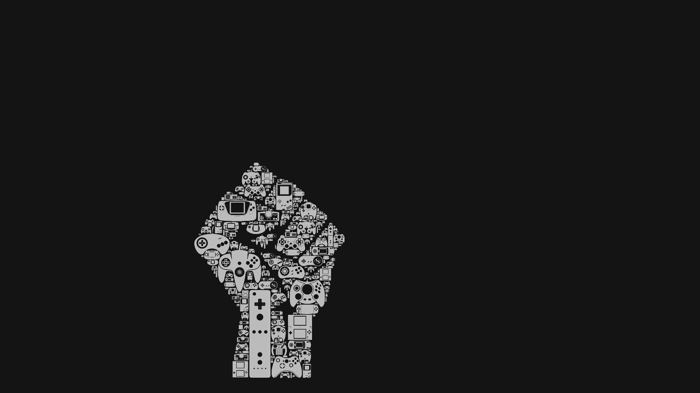

The Dresden Triptych is a very small hinged-triptych altarpiece signed and dated 1437 by the Early Netherlandish painter Jan van Eyck. It consists of five paintings: one central and four on two double-sided wings. It may have been intended as a portable altarpiece, and is his only extant non-portrait painting signed with his personal motto ALC IXH XAN ("I Do as I Can"). The outer wings show the Virgin Mary and the Archangel Gabriel in an Annunciation scene in grisaille. The inner panels are set in an ecclesiastical interior. In the central inner panel Mary holds the Christ Child; in the left-hand outer wing the Archangel Michael presents a kneeling donor; on the right Saint Catherine of Alexandria reads a prayer book (depicted). The triptych's frames are the originals; richly decorated with Latin inscriptions, they indicate that the donor, whose identity is now lost, was highly educated. The coats of arms on the interior borders are associated with the Giustiniani of Genoa – an influential albergo active from 1362
Go somewhereWith supporting text below as a natural lead-in to additional content.The Dresden Triptych is a very small hinged-triptych altarpiece signed and dated 1437 by the Early Netherlandish painter Jan van Eyck. It consists of fyck. It consists of five bergo active from 1362yck. It consists of five bergo active from 1362yck. It consists of five bergo active from 1362yck. It consists of five bergyck. It consists of five bergo active from 1362yck. It consists of five bergo active from 1362o active from 1362yck. It consists of five bergo active from 1362yck. It consists of five bergo active from 1362ive bergo active from 1362 yck. It consists of five bergo active from 1362yck. It consists of five bergo active from 1362yck.